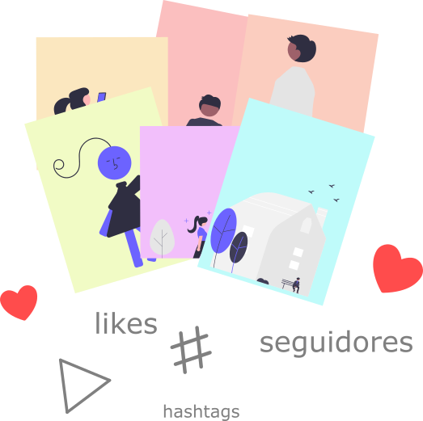

TikTok Stats

Tome decisões no TikTok baseadas em dados
Influencer,
receba uma consultoria personalizada e totalmente automatizada com a análise do seu perfil
Coletamos os dados de todos os seus vídeos
Os dados são processados e analisados

Entregamos um relatório completo com as análises e dicas
Plano
Consultoria completa do perfil
R$ 35,00
Agência,
decida qual influencer vai espalhar a sua marca pelo mundo

O nosso comparador considera uma série de fatores para tomada de decisão, tais como:


Comparamos múltiplas contas no TikTok, te mostrando quais se sobressaem em determinados aspectos
Compare 2 contas
R$ 25,00
Compare 4 contas
R$ 35,00
Compare 10 contas
R$ 55,00
Pilares do crescimento

Consistência
Ao menos um vídeo por dia é o necessário para manter a consistência em boa taxa. Mais publicações por dia são recomendadas

Engajamento
O engajamento pode ser mensurado individualmente por publicação com os comentários, compartilhamentos, likes e visualizações

Hashtags
As hashtags são muito importantes para engajamento e viralização dos seus vídeos. As hashtags certas entregam o conteúdo para as pessoas certas

Duração
Vídeos mais curtos são ideias para aumentar a retenção do seu público

Crescimento
Sua conta precisa estar em constante crescimento, em número de seguidores e de curtidas